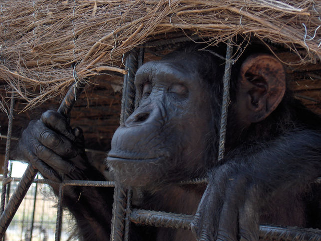
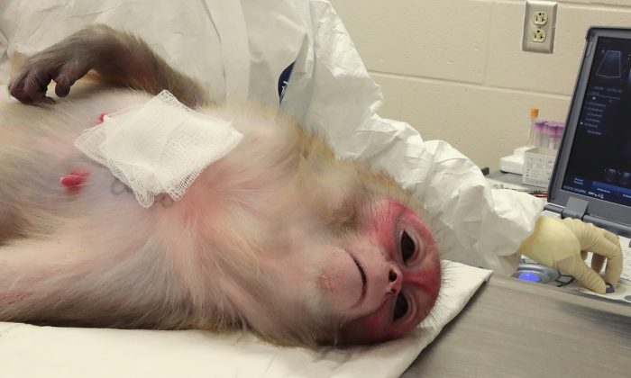
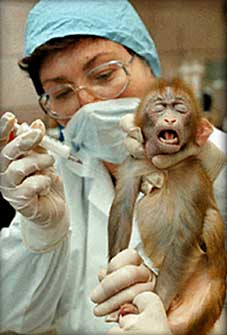
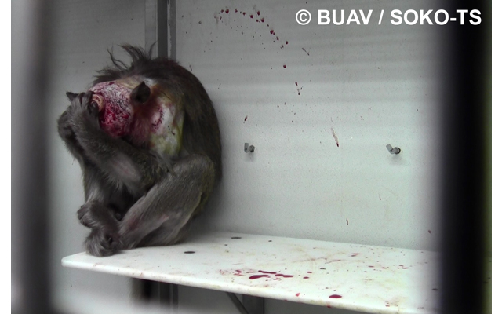
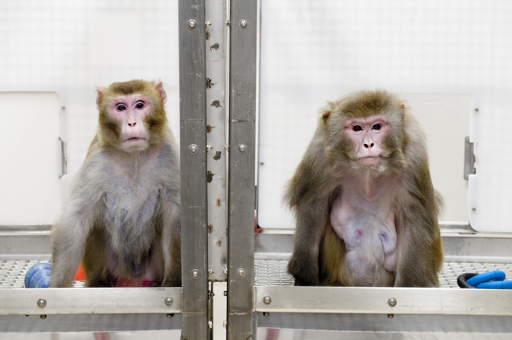
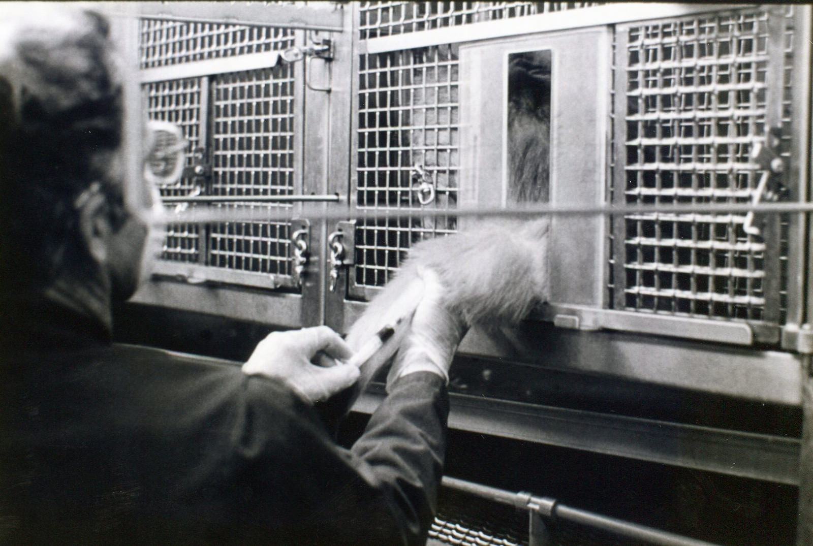
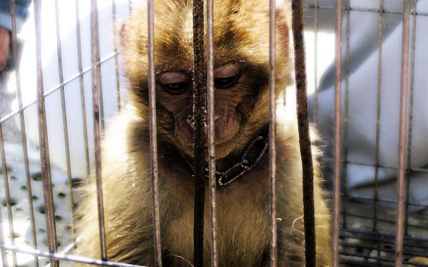
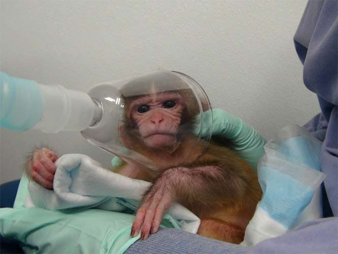
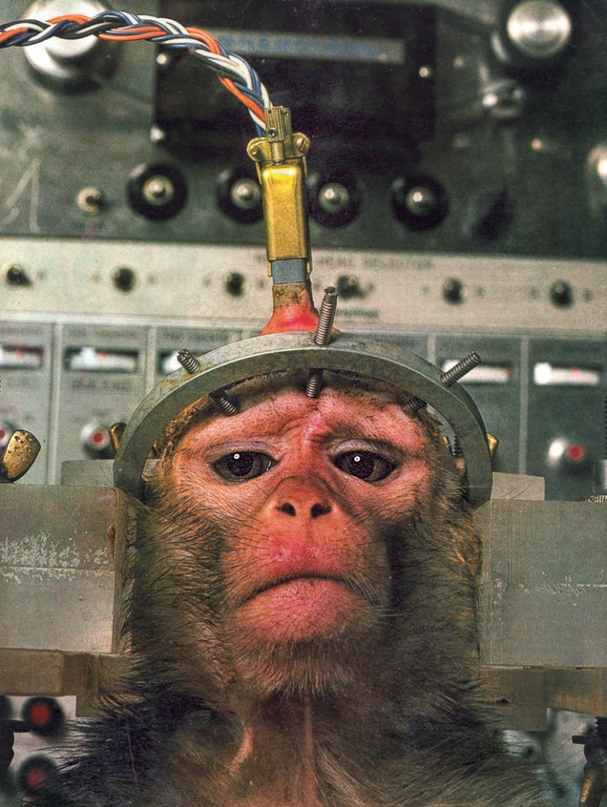

Descripcion del Tema
Los grandes simios están desapareciendo de una forma veloz y precipitada por la pérdida de su hábitat, la caza furtiva, el aceleramiento del cambio climático, ocasionado por nuestras sociedades industrializadas, por la corrupción sin medida de muchos gobiernos y por el olvido completo de que los grandes simios son también homínidos que tienen derecho a seguir evolucionando, a seguir existiendo, a tener sus derechos básicos y a vivir en sus ecosistemas tropicales junto a otras especies que también tienen ese derecho, como el nuestro, a la vida y a evolucionar.
Pero nuestra arrogancia no permite proteger nada que sea vivo y los políticos de todos los países son responsables directos de lo que está ocurriendo no sólo con el cambio climático sino con la extinción masiva de especies y la destrucción de la biodiversidad planetaria.
Sin embargo, el cine, con esta nueva película en la que muchos jóvenes solo verán a unos chimpancés violentos que quieren aniquilar a los humanos, presenta nuevamente a una especie diferente a la nuestra, a unos grandes simios violentos que se alzan en guerra con nuestra sociedad y a los que hay que exterminar sea como sea, independientemente de que después existan argumentos emotivos y momentos de empatía con el opresor.

Primates en Laboratorios
Cada año en los Estados Unidos más de 125,000 primates son confinados en laboratorios donde sufren de maltrato para después ser asesinados en experimentos invasivos, dolorosos y aterradores. Es bien sabido que los primates son seres sensibles e inteligentes que comparten muchas características importantes tanto biológicas como psicológicas con los humanos, son estos mismos atributos, desafortunadamente, los que los convierten en blancos perfectos para los científicos que los tratan como si fueran piezas desechables de equipo de laboratorio. Los Estados Unidos tienen la deshonrosa distinción de ser el único país en el mundo, además de Gabón, que continúa realizando experimentos invasivos en chimpancés.
- 
- 
- 
- 
- 
- 
- 
- 
Noticias Relacionadas
Visite los siguientes enlaces si desea enterarse sobre noticias al dia de la experimentacion con animales
Opinion Personal
Hoy en dia le experimentacion con animales ha incrementado bastante ,a raiz de que se quiere descubrir la cura para diferentes enfermedades.
No solo primates sino tambien perros,vacas,gatos,gallinas estan siendo sometidas a diferentes experimentos.
En especial los primates son quienes sufren las consecuencias porque tiene cierta semejanza con el cuerpo humano y es asi que es mas factible experimentar en ellos diferentes medicamentos.
Los pobres animales son sacados de sus habitats y son sometidos a torturas hasta su muerte,no tomamos en cuenta que estos animales de tanto medicamento podrian evolucionar a tal punto de volverse contra la humanidad como lo vemos en la pelicula.
Demos un alto a tanta tortura contra los animales!!!
El hombre no mide las cosecuencias de sus actos no solo atenta contra la fauna sino tambien contra la flora.Debemos tomar conciencia que nuestro planeta esta sufriendo y poco a poco lo estamos destruyendo.BASTA!!!